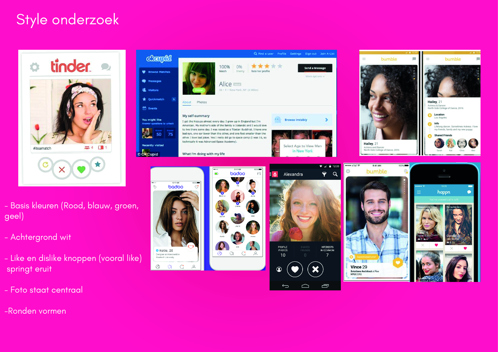
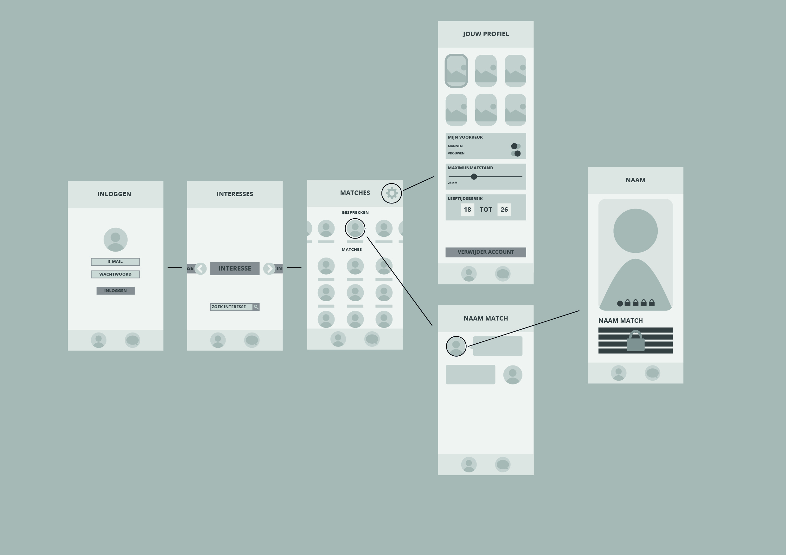

Front/back-end
Back to work page

In the second year at CMD we got to choose between different directions to take our education, my choice was the tech side of things. During these theme semester we followed a course that was all about front-end, back-end and databases.
The assignment was to make a dating app functionality, my dating app was called hooked. In this dating app you could match with people who had the same interests as you.
In this prototype you can login (you can type in a email and a random password) and then you get a list with interests, you can add new interests and remove others. I did everything for this project design back-end and front-end. For this prototype I used mongDB and node.js for and Heroku to get the prototype online.

Click here to go to the prototype